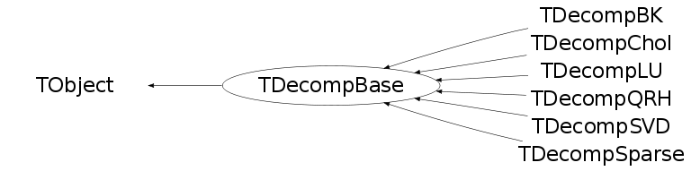

class TDecompBase: public TObject
Decomposition Base class This class forms the base for all the decompositions methods in the linear algebra package . It or its derived classes have installed the methods to solve equations,invert matrices and calculate determinants while monitoring the accuracy. Each derived class has always the following methods available: Condition() : In an iterative scheme the condition number for matrix inversion is calculated . This number is of interest for estimating the accuracy of x in the equation Ax=b For example: A is a (10x10) Hilbert matrix which looks deceivingly innocent and simple, A(i,j) = 1/(i+j+1) b(i) = Sum_j A(i,j), so a sum of a row in A the solution is x(i) = 1. i=0,.,9 However, TMatrixD m....; TVectorD b..... TDecompLU lu(m); lu.SetTol(1.0e-12); lu.Solve(b); b.Print() gives, {1.000,1.000,1.000,1.000,0.998,1.000,0.993,1.001,0.996,1.000} Looking at the condition number, this is in line with expected the accuracy . The condition number is 3.957e+12 . As a simple rule of thumb, a condition number of 1.0e+n means that you lose up to n digits of accuracy in a solution . Since doubles are stored with 15 digits, we can expect the accuracy to be as small as 3 digits . Det(Double_t &d1,Double_t &d2) The determinant is d1*TMath::Power(2.,d2) Expressing the determinant this way makes under/over-flow very unlikely . Decompose() Here the actually decomposition is performed . One can change the matrix A after the decomposition constructor has been called without effecting the decomposition result Solve(TVectorD &b) Solve A x = b . x is supplied through the argument and replaced with the solution . TransSolve(TVectorD &b) Solve A^T x = b . x is supplied through the argument and replaced with the solution . MultiSolve(TMatrixD &B) Solve A X = B . where X and are now matrices . X is supplied through the argument and replaced with the solution . Invert(TMatrixD &inv) This is of course just a call to MultiSolve with as input argument the unit matrix . Note that for a matrix a(m,n) with m > n a pseudo-inverse is calculated . Tolerances and Scaling The tolerance parameter (which is a member of this base class) plays a crucial role in all operations of the decomposition classes . It gives the user a powerful tool to monitor and steer the operations Its default value is sqrt(epsilon) where 1+epsilon = 1 If you do not want to be bothered by the following considerations, like in most other linear algebra packages, just set the tolerance with SetTol to an arbitrary small number . The tolerance number is used by each decomposition method to decide whether the matrix is near singular, except of course SVD which can handle singular matrices . For each decomposition this will be checked in a different way; in LU the matrix is considered singular when, at some point in the decomposition, a diagonal element < fTol . Therefore, we had to set in the example above of the (10x10) Hilbert, which is near singular, the tolerance on 10e-12 . (The fact that we have to set the tolerance < sqrt(epsilon) is a clear indication that we are losing precision .) If the matrix is flagged as being singular, operations with the decomposition will fail and will return matrices/vectors that are invalid . The observant reader will notice that by scaling the complete matrix by some small number the decomposition will detect a singular matrix . In this case the user will have to reduce the tolerance number by this factor . (For CPU time saving we decided not to make this an automatic procedure) . Code for this could look as follows: const Double_t max_abs = Abs(a).Max(); const Double_t scale = TMath::Min(max_abs,1.); a.SetTol(a.GetTol()*scale); For usage examples see $ROOTSYS/test/stressLinear.cxx
Function Members (Methods)
This is an abstract class, constructors will not be documented.
Look at the header to check for available constructors.
public:
| virtual | ~TDecompBase() |
| void | TObject::AbstractMethod(const char* method) const |
| virtual void | TObject::AppendPad(Option_t* option = "") |
| virtual void | TObject::Browse(TBrowser* b) |
| static TClass* | Class() |
| virtual const char* | TObject::ClassName() const |
| virtual void | TObject::Clear(Option_t* = "") |
| virtual TObject* | TObject::Clone(const char* newname = "") const |
| virtual Int_t | TObject::Compare(const TObject* obj) const |
| virtual Double_t | Condition() |
| virtual void | TObject::Copy(TObject& object) const |
| virtual Bool_t | Decompose() |
| virtual void | TObject::Delete(Option_t* option = "")MENU |
| virtual void | Det(Double_t& d1, Double_t& d2) |
| virtual Int_t | TObject::DistancetoPrimitive(Int_t px, Int_t py) |
| virtual void | TObject::Draw(Option_t* option = "") |
| virtual void | TObject::DrawClass() constMENU |
| virtual TObject* | TObject::DrawClone(Option_t* option = "") constMENU |
| virtual void | TObject::Dump() constMENU |
| virtual void | TObject::Error(const char* method, const char* msgfmt) const |
| virtual void | TObject::Execute(const char* method, const char* params, Int_t* error = 0) |
| virtual void | TObject::Execute(TMethod* method, TObjArray* params, Int_t* error = 0) |
| virtual void | TObject::ExecuteEvent(Int_t event, Int_t px, Int_t py) |
| virtual void | TObject::Fatal(const char* method, const char* msgfmt) const |
| virtual TObject* | TObject::FindObject(const char* name) const |
| virtual TObject* | TObject::FindObject(const TObject* obj) const |
| Int_t | GetColLwb() const |
| Double_t | GetCondition() const |
| Double_t | GetDet1() const |
| Double_t | GetDet2() const |
| virtual Option_t* | TObject::GetDrawOption() const |
| static Long_t | TObject::GetDtorOnly() |
| virtual const char* | TObject::GetIconName() const |
| virtual const char* | TObject::GetName() const |
| virtual Int_t | GetNcols() const |
| virtual Int_t | GetNrows() const |
| virtual char* | TObject::GetObjectInfo(Int_t px, Int_t py) const |
| static Bool_t | TObject::GetObjectStat() |
| virtual Option_t* | TObject::GetOption() const |
| Int_t | GetRowLwb() const |
| virtual const char* | TObject::GetTitle() const |
| Double_t | GetTol() const |
| virtual UInt_t | TObject::GetUniqueID() const |
| virtual Bool_t | TObject::HandleTimer(TTimer* timer) |
| virtual ULong_t | TObject::Hash() const |
| virtual void | TObject::Info(const char* method, const char* msgfmt) const |
| virtual Bool_t | TObject::InheritsFrom(const char* classname) const |
| virtual Bool_t | TObject::InheritsFrom(const TClass* cl) const |
| virtual void | TObject::Inspect() constMENU |
| void | TObject::InvertBit(UInt_t f) |
| virtual TClass* | IsA() const |
| virtual Bool_t | TObject::IsEqual(const TObject* obj) const |
| virtual Bool_t | TObject::IsFolder() const |
| Bool_t | TObject::IsOnHeap() const |
| virtual Bool_t | TObject::IsSortable() const |
| Bool_t | TObject::IsZombie() const |
| virtual void | TObject::ls(Option_t* option = "") const |
| void | TObject::MayNotUse(const char* method) const |
| virtual Bool_t | MultiSolve(TMatrixD& B) |
| virtual Bool_t | TObject::Notify() |
| void | TObject::Obsolete(const char* method, const char* asOfVers, const char* removedFromVers) const |
| static void | TObject::operator delete(void* ptr) |
| static void | TObject::operator delete(void* ptr, void* vp) |
| static void | TObject::operator delete[](void* ptr) |
| static void | TObject::operator delete[](void* ptr, void* vp) |
| void* | TObject::operator new(size_t sz) |
| void* | TObject::operator new(size_t sz, void* vp) |
| void* | TObject::operator new[](size_t sz) |
| void* | TObject::operator new[](size_t sz, void* vp) |
| TDecompBase& | operator=(const TDecompBase& source) |
| virtual void | TObject::Paint(Option_t* option = "") |
| virtual void | TObject::Pop() |
| virtual void | Print(Option_t* opt = "") const |
| virtual Int_t | TObject::Read(const char* name) |
| virtual void | TObject::RecursiveRemove(TObject* obj) |
| void | TObject::ResetBit(UInt_t f) |
| virtual void | TObject::SaveAs(const char* filename = "", Option_t* option = "") constMENU |
| virtual void | TObject::SavePrimitive(ostream& out, Option_t* option = "") |
| void | TObject::SetBit(UInt_t f) |
| void | TObject::SetBit(UInt_t f, Bool_t set) |
| virtual void | TObject::SetDrawOption(Option_t* option = "")MENU |
| static void | TObject::SetDtorOnly(void* obj) |
| static void | TObject::SetObjectStat(Bool_t stat) |
| Double_t | SetTol(Double_t newTol) |
| virtual void | TObject::SetUniqueID(UInt_t uid) |
| virtual void | ShowMembers(TMemberInspector& insp) |
| virtual Bool_t | Solve(TVectorD& b) |
| virtual Bool_t | Solve(TMatrixDColumn& b) |
| virtual TVectorD | Solve(const TVectorD& b, Bool_t& ok) |
| virtual void | Streamer(TBuffer& b) |
| void | StreamerNVirtual(TBuffer& b) |
| virtual void | TObject::SysError(const char* method, const char* msgfmt) const |
| Bool_t | TObject::TestBit(UInt_t f) const |
| Int_t | TObject::TestBits(UInt_t f) const |
| virtual Bool_t | TransSolve(TVectorD& b) |
| virtual Bool_t | TransSolve(TMatrixDColumn& b) |
| virtual TVectorD | TransSolve(const TVectorD& b, Bool_t& ok) |
| virtual void | TObject::UseCurrentStyle() |
| virtual void | TObject::Warning(const char* method, const char* msgfmt) const |
| virtual Int_t | TObject::Write(const char* name = 0, Int_t option = 0, Int_t bufsize = 0) |
| virtual Int_t | TObject::Write(const char* name = 0, Int_t option = 0, Int_t bufsize = 0) const |
protected:
| static void | DiagProd(const TVectorD& diag, Double_t tol, Double_t& d1, Double_t& d2) |
| virtual void | TObject::DoError(int level, const char* location, const char* fmt, va_list va) const |
| virtual const TMatrixDBase& | GetDecompMatrix() const |
| Int_t | Hager(Double_t& est, Int_t iter = 5) |
| void | TObject::MakeZombie() |
| void | ResetStatus() |
Data Members
public:
| enum EMatrixDecompStat { | kInit | |
| kPatternSet | ||
| kValuesSet | ||
| kMatrixSet | ||
| kDecomposed | ||
| kDetermined | ||
| kCondition | ||
| kSingular | ||
| }; | ||
| enum { | kWorkMax | |
| }; | ||
| enum TObject::EStatusBits { | kCanDelete | |
| kMustCleanup | ||
| kObjInCanvas | ||
| kIsReferenced | ||
| kHasUUID | ||
| kCannotPick | ||
| kNoContextMenu | ||
| kInvalidObject | ||
| }; | ||
| enum TObject::[unnamed] { | kIsOnHeap | |
| kNotDeleted | ||
| kZombie | ||
| kBitMask | ||
| kSingleKey | ||
| kOverwrite | ||
| kWriteDelete | ||
| }; |
protected:
| Int_t | fColLwb | Column lower bound of decomposed matrix |
| Double_t | fCondition | matrix condition number |
| Double_t | fDet1 | determinant mantissa |
| Double_t | fDet2 | determinant exponent for powers of 2 |
| Int_t | fRowLwb | Row lower bound of decomposed matrix |
| Double_t | fTol | sqrt(epsilon); epsilon is smallest number number so that 1+epsilon > 1 |
Class Charts
{kind=link}
{kind=link}
{kind=link}
{kind=link}

Function documentation
const TMatrixDBase & GetDecompMatrix() const
Bool_t TransSolve(TVectorD& b)
TVectorD TransSolve(const TVectorD& b, Bool_t& ok)